CORAL（コーラル）
コーラル音響の商標。かつてスピーカーを中心に活動していたメーカーで、自作派向けのユニット供給でも大手だった。1970年代にはカートリッジや昇圧トランスなどアナログディスク関連の製品も出してした。スピーカーに関しては1980年代後半まで活動を続けていたが、HifFi STEREO GUIDE 1990年版では姿を消している。現在では消息不明であるが、少なくともオーディオからは完全に撤退しているようだ。
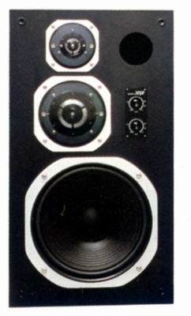
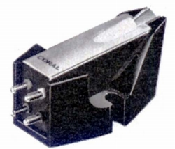 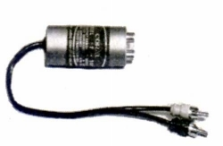 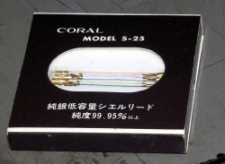
（左 MCカートリッジ 777EX 中央 昇圧トランス T-100 右 管理人所有のコーラル製シェルリード）
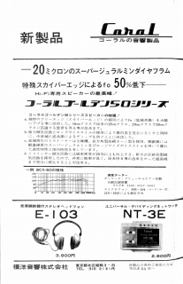
ヘッドフォンについては、1960年代前半にはすでに製品を発売しており、老舗の一つ。しかし70年代半ばの、まだコーン型が主流の時代のE-55、77までは自主的な企画商品のような感じがするが、ダイナミック型の主流がドーム型ユニットに移ってからは、他社からのOEM調達へ移っていったようだ。
�T.Eシリーズ(1次？）
1960年代の時点で「E」型番のヘッドフォンを少なくとも3機種発売していた。うちE-102/103は1963年、E-106は1966年時点で発売されていたことが確認できた。
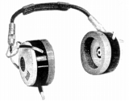
�U.HPシリーズ
1970年代初頭の製品は「HP」型番の製品だった。
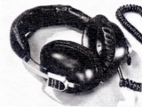
�V.Eシリーズ(2次？）
「HP」型番の製品はすぐに姿を消し、再び「E」型番のヘッドフォンに戻った。E-55/77はコーン型の製品で、カタログではヘッドバンドの構造やトーンコトロールについて自社の特許であることを記載している。E-80/88はドーム型振動板と思われる機種。
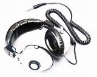
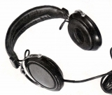
�W.CDシリーズ
現在確認できる最後のシリーズは「CD」型番の製品である。「プリモ」製のOEM調達機種と思われる。CD-55はプリモのCH-20C及びCH-20Jに、CD-77はCD-2に酷似している。CD-66はプリモに該当する機種が見あたらないが、ヘッドバンドはCD-55と共通であり、またドライバーユニットはプリモ製を思わせるものである。
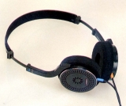 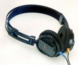
＊E-55について豊永尚輝 氏所有機の画像を使用しました。ありがとうございます。